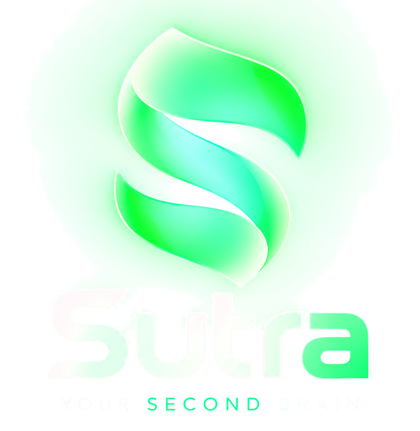

Your second brain,
on your own Mac.
Sutra remembers what you tell it, reads your documents and email, researches the web, works in your tools, and helps you learn — with its memory in plain markdown you own.
curl -fsSL https://raw.githubusercontent.com/im-anp/sutra/main/install.sh | bash
On Sept 12 you decided to take it if they matched the remote-first policy — see [[plans/job-search]]. Lena's last email confirms they do, and asks for a start date. You told me you'd prefer Nov 3.
I've drafted a reply accepting, with Nov 3 as the start date.
Works in the tools you already use
What it does
One thread through
everything you do.
Sutra is Sanskrit for “thread”. It ties your notes, decisions, plans, inbox and learning together — and remembers, so you don't have to.
Memory you own
Plain markdown in a folder on your disk. Open it in Obsidian, sync it however you like. Search runs locally, with on-device embeddings.
├── USER.md ← who you are
├── MEMORY.md
├── plans/job-search.md
├── learning/rust.md
└── daily/2026-09-26.md
Hand builds to coding agents
“Have Claude Code add dark mode to my blog.” It runs in the background; you watch every step live, then see exactly what changed.
- read src/styles/theme.css
- edit src/components/Toggle.tsx
- npm test — 24 passed
Learn it for real
Study plans from real sources, then review cards on a spaced-repetition schedule.
What does Rust's borrow checker prevent at compile time?
Reads the web, fast
Search, read any page or PDF as clean markdown, or pull in a whole docs section at once.
1. Create a new app
```bash
npx create-next-app@latest
```
Connect with a click
Sign in once and Sutra can search, read and draft in the tools you use.
Always asks first
Reading is free. Anything that sends, posts, buys or changes something waits for your yes — with exactly what will happen spelled out.
npm install in ~/Projects/blog asks youDocuments, email, images
Drop in a resume, a prescription or a PDF — it reads and remembers them. It reads your email, and creates images and diagrams when you need them.
artifacts/ cover-letter-berlin.md
media/ architecture-diagram.png
How it works
Running in two minutes.
No account to create, no server to run. One command installs it; one key powers every model.
Install
Paste the install command into Terminal. It downloads Sutra to ~/sutra and adds the sutra command.
Add your key
Paste an OpenRouter key when asked, and choose where your memory folder lives. That's the whole setup.
Talk to it
Run sutra — it opens in your browser. Update any time with sutra update.
Privacy
Yours. Only yours.
Sutra is built for one person on one computer. Your notes, email and logins never leave your machine — only the model calls go out, with your own key.
- Local by designRuns on your Mac and only answers your Mac — nothing listens on your network.
- Plain files you ownMemory is markdown in a folder you choose. Delete it and it's gone.
- Your key, your modelsBring an OpenRouter key; pick fast and strong models in Settings.
- No accountThere's no sign-in: whoever uses this computer is treated as you, so keep it yours.

Free to use. Installs in one line.
curl -fsSL https://raw.githubusercontent.com/im-anp/sutra/main/install.sh | bash